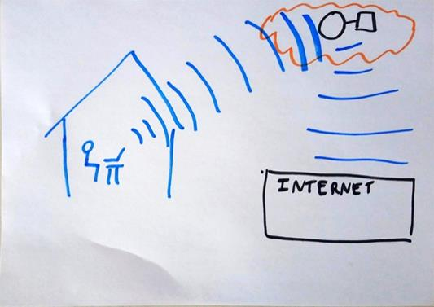
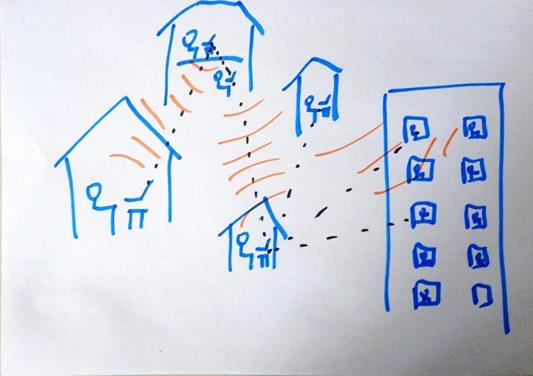
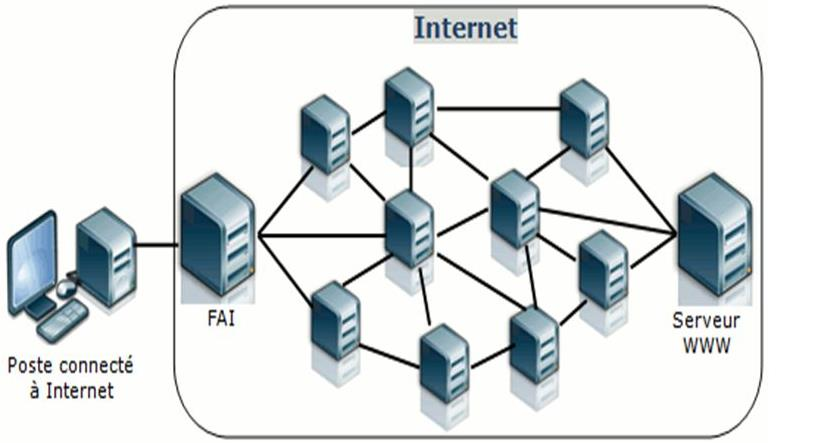
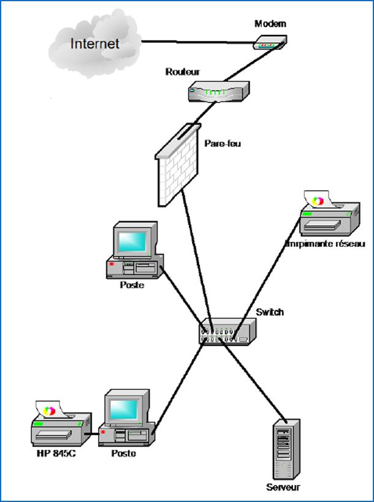

Dessiner Internet
Faire émerger les représentations initiales d’Internet puis identifier les principaux éléments qui composent un réseau.
Départ
Représentations initiales
La très grande majorité des élèves pense qu’Internet fonctionne avec les satellites. Il est donc possible d’obtenir le type de représentation ci-dessous.


Mise au point
Que doit faire apparaître une représentation d’Internet ?
La représentation doit faire apparaître des :
Supports de transmission
Ondes, câbles...
Périphériques finaux
Ordinateurs, smartphones, centres de données...
Périphériques intermédiaires
Commutateurs « switch », routeurs, pare-feu, modem, satellites...

